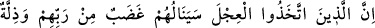
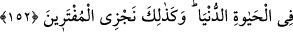
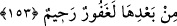

152. Buzağıyı (tanrı) edinenler var ya, işte onlara mutlaka Rablerinden bir gazap
ve dünya hayatında bir alçaklık erişecektir. Biz iftiracıları böyle cezalandırırız.
“Buzağıyı” tanrı “edinenlere” ve ona tapmaya devam edenlere, Samirî ve taraftarları
gibi kalplerine buzağı sevgisi içirilmiş olanlara “muhakkak Rab’lerinden” mâlik ve
sahiplerinden ahirette büyük “bir öfke” erişecektir. Çünkü işledikleri suç, suçların en
büyüğü ve günahların en çirkinidir. Buradaki “gadab” (öfke)den maksad, bu sıfatın
gâyesi olan intikam alma ve azab etmedir. Çünkü gerçek mânâda öfke, Allah Teâlâ için
tasavvur edilemez. “ve dünya hayatında bir alçaklık erişecektir.” yurtlarından
sürülmek, sürekli yoksulluk ve miskinlik içinde kalmak suretiyle kendileri ve çocukları
alçakça bir hayat süreceklerdir.
Samirî’ye ait olan zillet, insanlardan ayrılması ve onun insanlara, insanların da ona
dokunmalarının yasaklanmasıdır. Nitekim rivayete göre Mûsâ (a.s.), Samirî’yi öldürmek
isteyince Allah Teâlâ ona: “Ey Mûsâ, sakın Samirî’yi öldürme. Çünkü o, cömert bir
kimsedir. Fakat onu, yanından uzaklaştır.” buyurdu. Bunun üzerine Mûsâ (a.s.) ona:
“Aramızdan çık git. Artık hayatın boyunca sen, bilmeden sana dokunmak isteyenlere:
“Bana dokunmayın.” diyeceksin. Böylece ne sen kimseye dokunabileceksin, ne de kimse
sana dokunabilecek. Ölünceye kadar yalnız başına kalacaksın” dedi. Bundan sonra
Samirî’ye dokunan kimse hemen hummaya yakalanırdı. Rivayete göre şimdiye kadar
Samirî’nin neslinden gelenlerde de aynı özellik bulunmaktadır.
Buzağıya tapanların hak ettiği azab o zaman vuku bulup geçtiği halde ayette bunun
gelecekte olacağının ifade edilmesi, sonradan gelenlerin durumunun öncekilere dâhil
edilmesi yoluyladır.
“İşte
biz
iftiracıları”
Allah’a
iftira
edenleri
“böyle
cezalandırırız.”
İsrâiloğulları’nın ortaya attıkları iftiradan daha büyük bir iftira yoktur. Çünkü onlar,
ziynetleri yakıp ondan buzağı yapmışlar ve “bu sizin de tanrınız, Mûsâ’nın da
tanrısıdır.” (Tâhâ, 20/88) demişlerdir. Belki de ne onlardan önce, ne de sonra hiç
kimse böyle bir iftirada bulunmamıştır.
153. Kötülükler yaptıktan sonra ardından tevbe edip de iman edenlere gelince,
şüphesiz ki o tevbe ve imandan sonra, Rabbin elbette bağışlayan ve esirgeyendir.